Background
We have finally reached the item that represents 3D graphics best - the projection from the 3D world on a 2D plane while maintaining the appearance of depth. A good example is a picture of a road or railway-tracks that seem to converge down to a single point far away in the horizon.
We are going to generate the transformation that satisfies the above requirement and we have an additional requirement we want to "piggyback" on it which is to make life easier for the clipper by representing the projected coordinates in a normalized space of -1 to +1. This means the clipper can do its work without having knowledge of the screen dimension and the location of the near and far planes.
The perspective projection tranformation will require us to supply 4 parameters:
- The aspect ratio - the ratio between the width and the height of the rectangular area which will be the target of projection.
- The vertical field of view: the vertical angle of the camera through which we are looking at the world.
- The location of the near Z plane. This allows us to clip objects that are too close to the camera.
- The location of the far Z plane. This allows us to clip objects that are too distant from the camera.
The aspect ratio is required since we are going to represent all coordinates in a normalized space whose width is equal to its height. Since this is rarely the case with the screen where the width is usually larger than the height it will need to be represented in the transformation by somehow "condensing" the points on the horizontal line vs. the vertical line. This will enable us to squeeze in more coordinates in terms of the X component in the normalized space which will satisfy the requirement of "seeing" more on the width than on the height in the final image.
The vertical field of view allows us to zoom in and out on the world. Consider the following example. In the picture on the left hand side the angle is wider which makes objects smaller while in the picture on the right hand side the angle is smaller which makes the same object appear larger. Note that this has an effect on the location of the camera which is a bit counter intuitive. On the left (where we zoom in with a smaller field of view) the camera needs to be placed further away and on the right it is closer to the projection plane. However, remember that this has no real effect since the projected coordinates are mapped to the screen and the location of the camera plays no part.
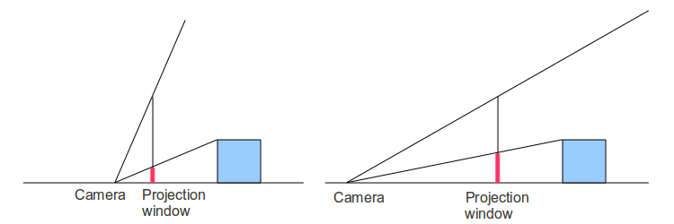We start by determining the distance of the projection plane from the camera. The projection plane is a plane which is parallel to the XY plane. Obviously, not the entire plane is visible because this is too much. We can only see stuff in a rectangular area (called the projection window) which has the same proportions of our screen. The apsect ratio is calculated as follows:
ar = screen width / screen height
Let us conviniently determine the height of the projection window as 2 which means the width is exactly twice the aspect ratio (see the above equation). If we place the camera in the origin and look at the area from behind the camera's back we will see the following:
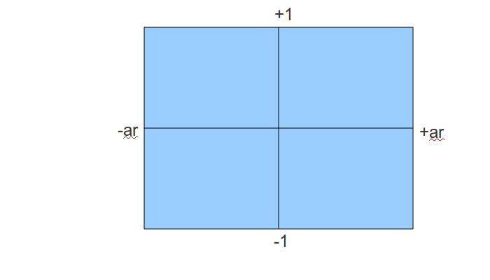Anything outside this rectangle is going to be clipped away and we already see that coordinates inside it will have their Y component in the required range. The X component is currently a bit bigger but we will provide a fix later on.
Now let's take a look at this "from the side" (looking down at the YZ plane):
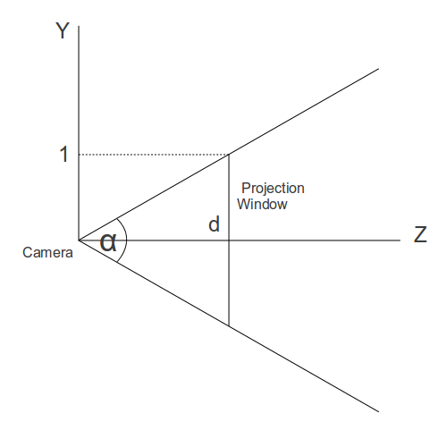We find the distance from the camera to the projection plane using the vertical field of view (denoted by the angle alpha):
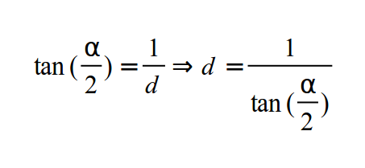The next step is to calculate the projected coordinates of X and Y. Consider the next image (again looking down at the YZ plane).
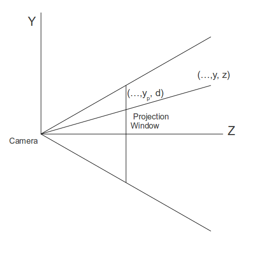We have a point in the 3D world with the coordinates (x,y,z). We want to find (xp,yp) that represent the projected coordinates on the projection plane. Since the X component is out of scope in this diagram (it is pointing in and out of the page) we'll start with Y. According to the rule of similar triangles we can determine the following:
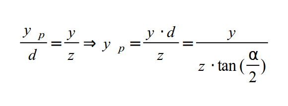In the same manner for the X component:
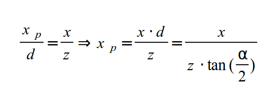Since our projection window is 2*ar (width) by 2 (height) in size we know that a point in the 3D world is inside the window if it is projected to a point whose projected X component is between -ar and +ar and the projected Y component is between -1 and +1. So on the Y component we are normalized but on the X component we are not. We can get Xp normalized as well by further dividing it by the aspect ratio. This means that a point whose projected X component was +ar is now +1 which places it on the right hand side of the normalized box. If its projected X component was +0.5 and the aspect ratio was 1.333 (which is what we get on an 1024x768 screen) the new projected X component is 0.375. To summarize, the division by the aspect ratio has the effect of condensing the points on the X axis.
We have reached the following projection equations for the X and Y components:
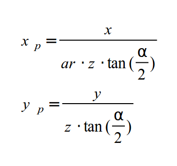Before completing the full process let's try to see how the projection matrix would look like at this point. This means representing the above using a matrix. Now we run into a problem. In both equations we need to divide X and Y by Z which is part of the vector that represents position. However, the value of Z changes from one vertex to the next so you cannot place it into one matrix that projects all vertices. To understand this better think about the top row vector of the matrix (a, b, c, d). We need to select the values of the vector such that the following will hold true:
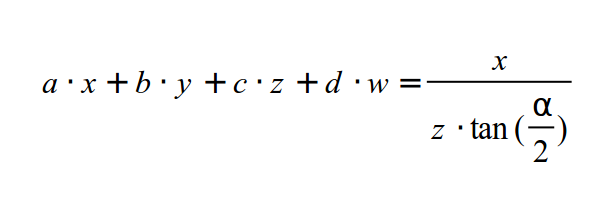This is the dot product operation between the top row vector of the matrix with the vertex position which yields the final X component. We can select 'b' and 'd' to be zero but we cannot find an 'a' and 'c' that can be plugged into the left hand side and provide the results on the right hand side. The solution adopted by OpenGL is to seperate the transformation into two parts: a multiplication by a projection matrix followed by a division by the Z value as an independant step. The matrix is provided by the application and the shader must include the multiplication of the position by it. The division by the Z is hard wired into the GPU and takes place in the rasterizer (somewhere between the vertex shader and the fragment shader). How does the GPU knows which vertex shader output to divide by its Z value? simple - the built-in variable gl_Position is designated for that job. Now we only need to find a matrix that represents the projection equations of X & Y above.
After multiplying by that matrix the GPU can divide by Z automatically for us and we get the result we want. But here's another complexity: if we multiply the matrix by the vertex position and then divide it by Z we literally loose the Z value because it becomes 1 for all vertices. The original Z value must be saved in order to perform the depth test later on. So the trick is to copy the original Z value into the W component of the resulting vector and divide only XYZ by W instead of Z. W maintains the original Z which can be used for depth test. The automatic step of dividing gl_Position by its W is called 'perspective divide'.
We can now generate an intermediate matrix that represents the above two equations as well as the copying of the Z into the W component:
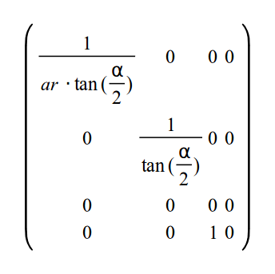As I said earlier, we want to include the normalization of the Z value as well to make it easier for the clipper to work without knowing the near and far Z values. However, the matrix above turns Z into zero. Knowing that after transforming the vector the system will automatically do perspective divide we need to select the values of the third row of the matrix such that following the division any Z value within viewing range (i.e. NearZ <= Z <= FarZ) will be mapped to the [-1,1] range. Such a mapping operation is composed of two parts. First we scale down the range [NearZ, FarZ] down to any range with a width of 2. Then we move (or translate) the range such that it will start at -1. Scaling the Z value and then translating it is represented by the general function:
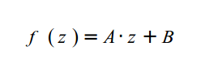But following perspective divide the right hand side of the function becomes:
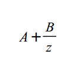Now we need to find the values of A and B that will perform the maping to [-1,1]. We know that when Z equals NearZ the result must be -1 and that when Z equals FarZ the result must be 1. Therefore we can write:
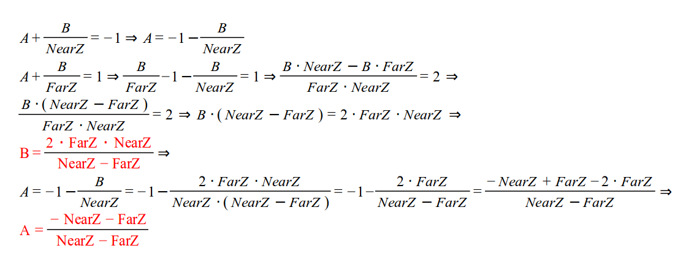Now we need to select the third row of the matrix as the vector (a b c d) that will satisfy:
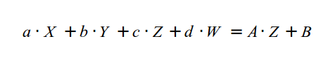We can immediately set 'a' and 'b' to be zero because we don't want X and Y to have any effect on the transformation of Z. Then our A value can become 'c' and the B value can become 'd' (since W is known to be 1).
Therefore, the final transformation matrix is:
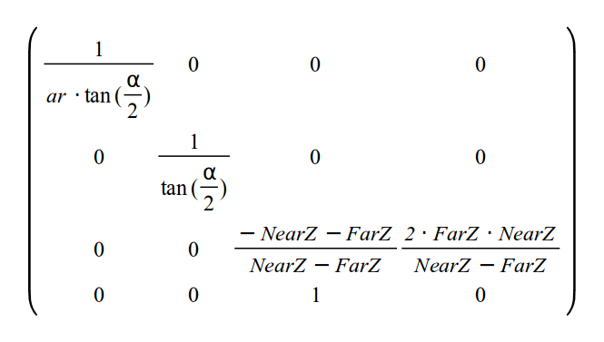After multiplying the vertex position by the projection matrix the coordinates are said to be in Clip Space and after performing the perspective divide the coordinates are in NDC Space (Normalized Device Coordinates).
The path that we have taken in this series of tutorials should now become clear. Without doing any projection we can simply output vertices from the VS whose XYZ components (of the position vector) are within the range of [-1,+1]. This will make sure they end up somewhere in the screen. By making sure that W is always 1 we basically prevent perspective divide from having any effect. After that the coordinates are transformed to screen space and we are done. When using the projection matrix the perspective divide step becomes an integral part of the 3D to 2D projection.
Source walkthru
void Pipeline::InitPerspectiveProj(Matrix4f& m) const>
{
const float ar = m_persProj.Width / m_persProj.Height;
const float zNear = m_persProj.zNear;
const float zFar = m_persProj.zFar;
const float zRange = zNear - zFar;
const float tanHalfFOV = tanf(ToRadian(m_persProj.FOV / 2.0));
m.m[0][0] = 1.0f / (tanHalfFOV * ar);
m.m[0][1] = 0.0f;
m.m[0][2] = 0.0f;
m.m[0][3] = 0.0f;
m.m[1][0] = 0.0f;
m.m[1][1] = 1.0f / tanHalfFOV;
m.m[1][2] = 0.0f;
m.m[1][3] = 0.0f;
m.m[2][0] = 0.0f;
m.m[2][1] = 0.0f;
m.m[2][2] = (-zNear - zFar) / zRange;
m.m[2][3] = 2.0f * zFar * zNear / zRange;
m.m[3][0] = 0.0f;
m.m[3][1] = 0.0f;
m.m[3][2] = 1.0f;
m.m[3][3] = 0.0f;
}
A structure called m_persProj was added to the Pipeline class that holds the perspective projection configurations. The method above generates the matrix that we have developed in the background section.
m_transformation = PersProjTrans * TranslationTrans * RotateTrans * ScaleTrans;
We add the perspective projection matrix as the first element in the multiplication that generates the complete transformation. Remember that since the position vector is multiplied on the right hand side that matrix is actually the last. First we scale, then rotate, translate and finally project.
p.SetPerspectiveProj(30.0f, WINDOW_WIDTH, WINDOW_HEIGHT, 1.0f, 1000.0f);
In the render function we set the projection parameters. Play with these and see their effect.
For more information on this subject check out the following video tutorial by Frahaan Hussain.
Next tutorial